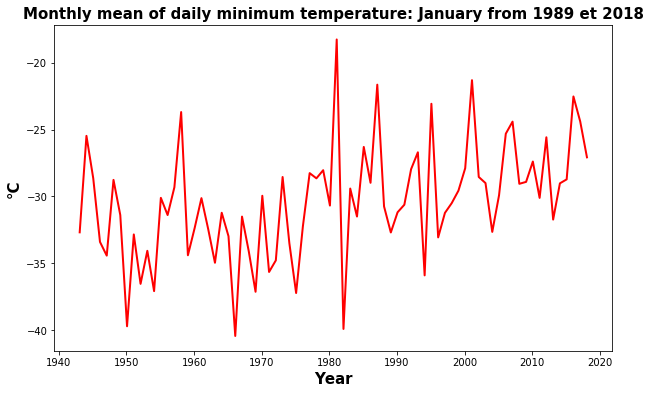

ECCC homogenized dataset

Extract daily temperature from Environment Canada using Python
The objective of this product is to retrieve daily temperature data from the second generation homogenized dataset of Environment and Climate Change Canada developed by Vincent et al. 2012.
Adjusted and homogenized Canadian climate dataset (DCCAH) were prepared to provide a better spatial and temporal representation of the climate trends in Canada.
In the Second Generation of Homogenized Temperature, new adjustments were applied to the daily minimum temperatures at synoptic stations (mainly airports) to address the bias due to the change in observing time in July 1961 (Vincent et al. 2009).
Daily homogenized temperatures (minimum, maximum and mean) can be dowloaded on this link.
Raw dataset can be downloaded here.
In this post, we will work on a specific province in Canada (using filters). To do this, we will use Temperature_Stations.xls available on ftp site. This file provide us a list of all stations available.
We first need to import our librairies:
import pandas as pd
import os
from datetime import date
import calendar
import numpy as np
import pathlib
import warnings
warnings.filterwarnings("ignore")
from itertools import islice
We will work with daily minimum temperature data only for the Northwest Territories of Canada.
Referring to the document Temperature_Stations.xls, we see that the acronym for this province is: NWT.
dataframe = pd.read_excel("./Temperature_Stations.xls", skiprows = range(0, 3))
dataframe.head()
| Prov | Nom de station | stnid | année déb. | mois déb. | année fin. | mois fin. | lat (deg) | long (deg) | élév (m) | stns jointes | |
|---|---|---|---|---|---|---|---|---|---|---|---|
| 0 | BC | AGASSIZ | 1100120 | 1893 | 1 | 2018 | 9 | 49.25 | -121.77 | 15 | N |
| 1 | BC | ATLIN | 1200560 | 1905 | 8 | 2018 | 12 | 59.57 | -133.7 | 674 | N |
| 2 | BC | BARKERVILLE | 1090660 | 1888 | 2 | 2015 | 3 | 53.07 | -121.52 | 1265 | N |
| 3 | BC | BEAVERDELL | 1130771 | 1939 | 1 | 2006 | 9 | 49.48 | -119.05 | 838 | Y |
| 4 | BC | BELLA COOLA | 1060841 | 1895 | 5 | 2017 | 11 | 52.37 | -126.68 | 18 | Y |
Using this Dataframe we can define some input parameters to filter our data.
varin = 'dn' # variable acronym
path = 'Homog_daily_min_temp_v2018' # path to get data
varout = 'Tasmin'
province = 'NWT' # Province to work with
We can now filter our dataset.
globals()['dataframe_'+province] = dataframe.loc[(dataframe["Prov"] == province),:]
globals()['dataframe_'+province]
| Prov | Nom de station | stnid | année déb. | mois déb. | année fin. | mois fin. | lat (deg) | long (deg) | élév (m) | stns jointes | |
|---|---|---|---|---|---|---|---|---|---|---|---|
| 65 | NWT | CAPE PARRY | 2200675 | 1957 | 5 | 2018 | 12 | 70.17 | -124.72 | 87 | N |
| 66 | NWT | FORT GOOD HOPE | 2201450 | 1944 | 8 | 2018 | 12 | 66.23 | -128.65 | 82 | Y |
| 68 | NWT | FORT RELIANCE | 2201903 | 1948 | 10 | 2018 | 12 | 62.72 | -109.17 | 168 | Y |
| 69 | NWT | FORT SIMPSON | 2202103 | 1895 | 11 | 2018 | 12 | 61.77 | -121.23 | 169 | Y |
| 70 | NWT | FORT SMITH | 2202201 | 1913 | 7 | 2018 | 12 | 60.02 | -111.97 | 205 | Y |
| 71 | NWT | HAY RIVER | 2202401 | 1893 | 9 | 2018 | 12 | 60.83 | -115.78 | 166 | Y |
| 72 | NWT | INUVIK | 2202578 | 1957 | 3 | 2018 | 12 | 68.3 | -133.48 | 103 | Y |
| 73 | NWT | MOULD BAY | 250M001 | 1948 | 5 | 2018 | 12 | 76.23 | -119.35 | 2 | Y |
| 74 | NWT | NORMAN WELLS | 2202801 | 1943 | 5 | 2018 | 12 | 65.28 | -126.8 | 73 | Y |
| 75 | NWT | SACHS HARBOUR | 2503648 | 1955 | 11 | 2018 | 8 | 72 | -125.27 | 86 | Y |
| 76 | NWT | TUKTOYAKTUK | 2203914 | 1957 | 6 | 2018 | 12 | 69.45 | -133 | 18 | Y |
| 77 | NWT | YELLOWKNIFE | 2204101 | 1942 | 7 | 2018 | 12 | 62.47 | -114.43 | 206 | Y |
We found 13 stations for this province.
We want to work with YELLOWKNIFE station: stnid = 2204101.
stnid = '2204101'
f1 = open('./'+path+'/'+str(varin)+str(stnid)+'.txt', 'r')
for line in islice(f1, 7):
print(line)
2204101, YELLOWKNIFE , NWT, station joined , Homogenized daily minimum temperature , Deg Celcius, Updated to December 2018
2204101, YELLOWKNIFE , NWT, station jointe , Temperature quotidienne minimale homogeneisee, Deg Celcius, Mise a jour jusqu a decembre 2018
Year Mo Day 01 Day 02 Day 03 Day 04 Day 05 Day 06 Day 07 Day 08 Day 09 Day 10 Day 11 Day 12 Day 13 Day 14 Day 15 Day 16 Day 17 Day 18 Day 19 Day 20 Day 21 Day 22 Day 23 Day 24 Day 25 Day 26 Day 27 Day 28 Day 29 Day 30 Day 31
Annee Mo Jour 01 Jour 02 Jour 03 Jour 04 Jour 05 Jour 06 Jour 07 Jour 08 Jour 09 Jour 10 Jour 11 Jour 12 Jour 13 Jour 14 Jour 15 Jour 16 Jour 17 Jour 18 Jour 19 Jour 20 Jour 21 Jour 22 Jour 23 Jour 24 Jour 25 Jour 26 Jour 27 Jour 28 Jour 29 Jour 30 Jour 31
1942 7 12.2 13.3 11.7 10.0 9.4 11.7 14.4 14.4 13.3 12.2 10.6 11.7 11.1 12.8 14.4 15.0 13.9 14.4 13.9 14.4 13.9 13.3 11.7 12.2 11.1 12.2 13.3 10.0 10.6 11.7 8.3
1942 8 7.8 5.0 9.4 12.8 9.4 9.4 10.0 10.6 12.8 10.6 12.2 12.2 9.4 15.0 12.8 11.7 14.4 14.4 11.7 8.3 9.4 7.8 12.2 8.9 3.9 7.2 10.6 11.1 7.2 5.0 3.3
1942 9 3.9 6.1 6.1 8.3 9.4 11.1 11.1 6.7 6.1 9.4 5.0 9.4 7.2 4.4 5.0 4.4 3.3 1.1 2.2 -0.6 -2.2 0.0 -1.7 1.1 -4.4 -0.6 0.0 -0.6 1.7 1.1 -9999.9M
Cleaning data:
We see that in our dataset we have for each line the daily data by year and by month according to the structure:
There is a 4 rows header. We will delete this header and also delete the alphanumeric characters, clean the missing values and create a dataframe.
f1 = open('./'+path+'/'+str(varin)+str(stnid)+'.txt', 'r')
f2 = open('./tmp.txt', 'w')
for line in f1:
for word in line:
if word == 'M':
f2.write(word.replace('M', ' '))
elif word == 'a':
f2.write(word.replace('a', ' '))
else:
f2.write(word)
f1.close()
f2.close()
df_station = pd.read_csv('./tmp.txt', delim_whitespace=True, skiprows = range(0, 4))
df_station.head()
| 1942 | 7 | 12.2 | 13.3 | 11.7 | 10.0 | 9.4 | 11.7.1 | 14.4 | 14.4.1 | 13.3.1 | 12.2.1 | 10.6 | 11.7.2 | 11.1 | 12.8 | 14.4.2 | 15.0 | 13.9 | 14.4.3 | 13.9.1 | 14.4.4 | 13.9.2 | 13.3.2 | 11.7.3 | 12.2.2 | 11.1.1 | 12.2.3 | 13.3.3 | 10.0.1 | 10.6.1 | 11.7.4 | 8.3 | |
|---|---|---|---|---|---|---|---|---|---|---|---|---|---|---|---|---|---|---|---|---|---|---|---|---|---|---|---|---|---|---|---|---|---|
| 0 | 1942 | 8 | 7.8 | 5 | 9.4 | 12.8 | 9.4 | 9.4 | 10 | 10.6 | 12.8 | 10.6 | 12.2 | 12.2 | 9.4 | 15 | 12.8 | 11.7 | 14.4 | 14.4 | 11.7 | 8.3 | 9.4 | 7.8 | 12.2 | 8.9 | 3.9 | 7.2 | 10.6 | 11.1 | 7.2 | 5 | 3.3 |
| 1 | 1942 | 9 | 3.9 | 6.1 | 6.1 | 8.3 | 9.4 | 11.1 | 11.1 | 6.7 | 6.1 | 9.4 | 5 | 9.4 | 7.2 | 4.4 | 5 | 4.4 | 3.3 | 1.1 | 2.2 | -0.6 | -2.2 | 0 | -1.7 | 1.1 | -4.4 | -0.6 | 0 | -0.6 | 1.7 | 1.1 | -9999.9 |
| 2 | 1942 | 10 | 0 | 4.4 | 1.7 | 5 | 3.3 | -1.1 | 4.4 | 2.2 | 3.9 | 1.7 | 5 | 0.6 | -2.8 | -1.1 | 2.8 | -1.1 | -1.1 | 2.8 | 0.6 | -2.8 | -2.8 | -6.7 | -10.6 | -11.1 | -7.2 | -2.2 | -1.7 | -1.1 | -3.9 | -5 | -8.3 |
| 3 | 1942 | 11 | -11.7 | -13.9 | -13.3 | -12.8 | -12.8 | -12.8 | -12.2 | -17.8 | -12.2 | -21.1 | -16.1 | -16.1 | -17.8 | -11.1 | -22.2 | -25 | -25 | -22.8 | -17.8 | -23.9 | -26.7 | -13.9 | -18.3 | -26.7 | -32.2 | -31.1 | -34.4 | -26.7 | -30 | -27.2 | -9999.9 |
| 4 | 1942 | 12 | -23.9 | -20.6 | -20.6 | -25 | -20.6 | -20.6 | -26.1 | -27.8 | -30 | -31.1 | -28.9 | -23.9 | -25 | -31.1 | -33.9 | -37.2 | -37.8 | -38.9 | -40.6 | -39.4 | -33.3 | -35 | -35.6 | -33.9 | -26.1 | -31.7 | -34.4 | -28.9 | -24.4 | -33.9 | -40.6 |
That's better but we still have some missing values. We will also change column names.
df_station.columns = ['Year', 'Month', 'D1','D2','D3','D4','D5','D6','D7','D8','D9','D10',
'D11','D12','D13','D14','D15','D16','D17','D18','D19','D20',
'D21','D22','D23','D24','D25','D26','D27','D28','D29','D30','D31']
os.remove("./tmp.txt")
# nettoyage des valeurs manquantes
try:
df_station = df_station.replace({'E':''}, regex=True)
except:
pass
try:
df_station = df_station.replace({'a':''}, regex=True)
except:
pass
try:
df_station = df_station.replace({'-9999.9':''}, regex=True)
except:
pass
try:
df_station = df_station.replace({-9999.9:''}, regex=True)
except:
pass
for col in df_station.columns[2:]:
df_station[col] = pd.to_numeric(df_station[col], errors='coerce')
df_station.head()
| Year | Month | D1 | D2 | D3 | D4 | D5 | D6 | D7 | D8 | D9 | D10 | D11 | D12 | D13 | D14 | D15 | D16 | D17 | D18 | D19 | D20 | D21 | D22 | D23 | D24 | D25 | D26 | D27 | D28 | D29 | D30 | D31 | |
|---|---|---|---|---|---|---|---|---|---|---|---|---|---|---|---|---|---|---|---|---|---|---|---|---|---|---|---|---|---|---|---|---|---|
| 0 | 1942 | 8 | 7.8 | 5 | 9.4 | 12.8 | 9.4 | 9.4 | 10 | 10.6 | 12.8 | 10.6 | 12.2 | 12.2 | 9.4 | 15 | 12.8 | 11.7 | 14.4 | 14.4 | 11.7 | 8.3 | 9.4 | 7.8 | 12.2 | 8.9 | 3.9 | 7.2 | 10.6 | 11.1 | 7.2 | 5 | 3.3 |
| 1 | 1942 | 9 | 3.9 | 6.1 | 6.1 | 8.3 | 9.4 | 11.1 | 11.1 | 6.7 | 6.1 | 9.4 | 5 | 9.4 | 7.2 | 4.4 | 5 | 4.4 | 3.3 | 1.1 | 2.2 | -0.6 | -2.2 | 0 | -1.7 | 1.1 | -4.4 | -0.6 | 0 | -0.6 | 1.7 | 1.1 | -9999.9 |
| 2 | 1942 | 10 | 0 | 4.4 | 1.7 | 5 | 3.3 | -1.1 | 4.4 | 2.2 | 3.9 | 1.7 | 5 | 0.6 | -2.8 | -1.1 | 2.8 | -1.1 | -1.1 | 2.8 | 0.6 | -2.8 | -2.8 | -6.7 | -10.6 | -11.1 | -7.2 | -2.2 | -1.7 | -1.1 | -3.9 | -5 | -8.3 |
| 3 | 1942 | 11 | -11.7 | -13.9 | -13.3 | -12.8 | -12.8 | -12.8 | -12.2 | -17.8 | -12.2 | -21.1 | -16.1 | -16.1 | -17.8 | -11.1 | -22.2 | -25 | -25 | -22.8 | -17.8 | -23.9 | -26.7 | -13.9 | -18.3 | -26.7 | -32.2 | -31.1 | -34.4 | -26.7 | -30 | -27.2 | -9999.9 |
| 4 | 1942 | 12 | -23.9 | -20.6 | -20.6 | -25 | -20.6 | -20.6 | -26.1 | -27.8 | -30 | -31.1 | -28.9 | -23.9 | -25 | -31.1 | -33.9 | -37.2 | -37.8 | -38.9 | -40.6 | -39.4 | -33.3 | -35 | -35.6 | -33.9 | -26.1 | -31.7 | -34.4 | -28.9 | -24.4 | -33.9 | -40.6 |
We can now detect the minimum and maximum recording years and write the daily data on a single column.
yearmin = df_station['Year'].min()
yearmax = df_station['Year'].max()
m_start = df_station['Month'].loc[(df_station['Year'] == yearmin)].min()
m_end = df_station['Month'].loc[(df_station['Year'] == yearmax)].max()
d_end = calendar.monthrange(yearmax, m_end)[1]
tmp_tmin = [ ]
for year in range(yearmin,yearmax+1): ### Loop over years
for month in range(1,13):
df = []
last_day = calendar.monthrange(year, month)[1]
tmin = df_station.loc[(df_station["Year"] == year) & (df_station["Month"] == month)].iloc[:,2:last_day+2].values
if len(tmin) == 0:
a = np.empty((calendar.monthrange(year,month)[1]))
a[:] = np.nan
df=pd.DataFrame(a)
else:
df=pd.DataFrame(tmin.T)
start = date(year, month, 1)
end = date(year, month, last_day)
delta=(end-start)
nb_days = delta.days + 1
rng = pd.date_range(start, periods=nb_days, freq='D')
df['datetime'] = rng
df.index = df['datetime']
tmp_tmin.append(df)
tmp_tmin = pd.concat(tmp_tmin)
df = pd.DataFrame({'datetime': tmp_tmin['datetime'], 'Var': tmp_tmin.iloc[:,0]}, columns = ['datetime','Tmin'])
df.index = df['datetime']
tmp_tmin = tmp_tmin.drop(["datetime"], axis=1)
tmp_tmin.tail()
| datetime | 0 |
|---|---|
| 2018-12-27 00:00:00 | -32.6 |
| 2018-12-28 00:00:00 | -33.3 |
| 2018-12-29 00:00:00 | -27.7 |
| 2018-12-30 00:00:00 | -35.2 |
| 2018-12-31 00:00:00 | -33.8 |
Visualization:
Quick visualization of the monthly average temperatures for the month of January. We will group the data by month and calculate the average.
import matplotlib.pylab as plt
import datetime
month_tmin = tmp_tmin.resample('M').mean()
month_tmin.tail()
| datetime | 0 |
|---|---|
| 2018-08-31 00:00:00 | 8.9871 |
| 2018-09-30 00:00:00 | -0.673333 |
| 2018-10-31 00:00:00 | -4.99032 |
| 2018-11-30 00:00:00 | -15.5233 |
| 2018-12-31 00:00:00 | -21.8129 |
tmin_janvier = month_tmin[month_tmin.index.month==1]
tmin_janvier.head()
| datetime | 0 |
|---|---|
| 1942-01-31 00:00:00 | nan |
| 1943-01-31 00:00:00 | -32.6871 |
| 1944-01-31 00:00:00 | -25.471 |
| 1945-01-31 00:00:00 | -28.6355 |
| 1946-01-31 00:00:00 | -33.4032 |
plt.rcParams["figure.figsize"]=[10,6]
plt.plot(tmin_janvier.index, tmin_janvier[:], label='Tmin Station', linewidth=2, c='r')
plt.title('Monthly mean of daily minimum temperature: January from ' + datetime.date(yearmin, 1, 1).strftime('%Y')+ ' et ' + datetime.date(yearmax, 1, 1).strftime('%Y'), fontsize=15, color='black', weight='semibold')
plt.xlabel('Year', fontsize=15, color='black', weight='semibold')
plt.ylabel('°C', fontsize=15, color='black', weight='semibold')
plt.show()

Final code
The following code retrieves all stations for a specific province but for a common period.
For example, we wish to extract all daily temperature data for the province of the Northwest Territories but only for the common period 1989-2018.
We wish to have one file per station.
import pandas as pd
import os
from datetime import date
import calendar
import numpy as np
import pathlib
################################################ #
varin = 'dn'
path = 'Homog_daily_min_temp_v2018'
varout = 'Tasmoy'
province = 'NWT'
yearmin = 1989
yearmax = 2018
###############################################################################
dataframe = pd.read_excel("./Temperature_Stations.xls", skiprows = range(0, 3))
globals()['dataframe_'+province] = dataframe.loc[(dataframe["Prov"] == province) & (dataframe["année déb."] <= yearmin) & (dataframe["année fin."] >= yearmax),:]
names = []
for i, row in globals()['dataframe_'+province].iterrows():
stnid = row['stnid']
f1 = open('./'+path+'/'+str(varin)+str(stnid)+'.txt', 'r')
f2 = open('./tmp.txt', 'w')
for line in f1:
for word in line:
if word == 'M':
f2.write(word.replace('M', ' '))
elif word == 'a':
f2.write(word.replace('a', ' '))
else:
f2.write(word)
f1.close()
f2.close()
station = pd.read_csv('./tmp.txt', delim_whitespace=True, skiprows = range(0, 4))
station.columns = ['Annee', 'Mois', 'D1','D2','D3','D4','D5','D6','D7','D8','D9','D10',
'D11','D12','D13','D14','D15','D16','D17','D18','D19','D20',
'D21','D22','D23','D24','D25','D26','D27','D28','D29','D30','D31']
os.remove("./tmp.txt")
try:
station = station.replace({'E':''}, regex=True)
except:
pass
try:
station = station.replace({'a':''}, regex=True)
except:
pass
try:
station = station.replace({'-9999.9':''}, regex=True)
except:
pass
try:
station = station.replace({-9999.9:''}, regex=True)
except:
pass
for col in station.columns[2:]:
station[col] = pd.to_numeric(station[col], errors='coerce')
m_start = station['Mois'].loc[(station['Annee'] == yearmin)].min()
m_end = station['Mois'].loc[(station['Annee'] == yearmax)].max()
d_end = calendar.monthrange(yearmax, m_end)[1]
tmp_tmin = [ ]
for year in range(yearmin,yearmax+1): ### Boucle sur les annees
for month in range(1,13):
df = []
last_day = calendar.monthrange(year, month)[1]
tmin = station.loc[(station["Annee"] == year) & (station["Mois"] == month)].iloc[:,2:last_day+2].values
if len(tmin) == 0:
a = np.empty((calendar.monthrange(year,month)[1]))
a[:] = np.nan
df=pd.DataFrame(a)
else:
df=pd.DataFrame(tmin.T)
start = date(year, month, 1)
end = date(year, month, last_day)
delta=(end-start)
nb_days = delta.days + 1
rng = pd.date_range(start, periods=nb_days, freq='D')
df['datetime'] = rng
df.index = df['datetime']
tmp_tmin.append(df)
tmp_tmin = pd.concat(tmp_tmin)
df = pd.DataFrame({'datetime': tmp_tmin['datetime'], 'Var': tmp_tmin.iloc[:,0]}, columns = ['datetime','Tmin'])
df.index = df['datetime']
tmp_tmin = tmp_tmin.drop(["datetime"], axis=1)
name = row['Nom de station'].replace(' ','_')
name = name.replace("'",'')
names.append(name)
mypath='./Daily_data_by_Province/'+varout+'/'
pathlib.Path(mypath).mkdir(parents=True, exist_ok=True)
tmp_tmin.to_csv(mypath+name+'_daily_'+varout+'_'+str(yearmin)+'-'+str(yearmax)+'.csv')
latlon = pd.DataFrame({'Latitude': globals()['dataframe_'+province]["lat (deg)"], 'Longitude': globals()['dataframe_'+province]["long (deg)"] }, columns = ['Latitude','Longitude'])
latlon.to_csv('./Daily_data_by_Province/stations_latlon_'+province+'.csv')
names = pd.DataFrame(names)
names.to_csv('./Daily_data_by_Province/stations_noms_'+province+'.csv')
base_filename = './Daily_data_by_Province/stations_noms_'+province+'.txt'
names[0].to_csv(base_filename, sep='\t', index = False)
Guillaume Dueymes
Data Scientist and Research Assistant
My research interests include data science, data management and climate science.